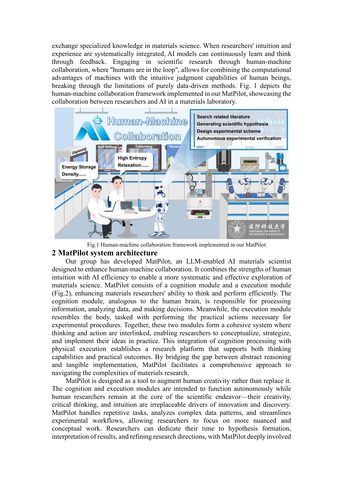
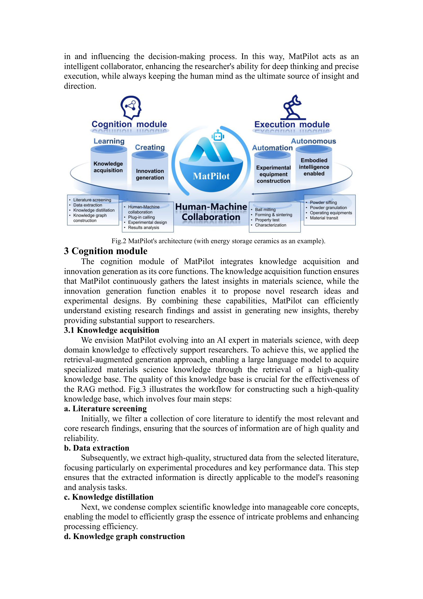
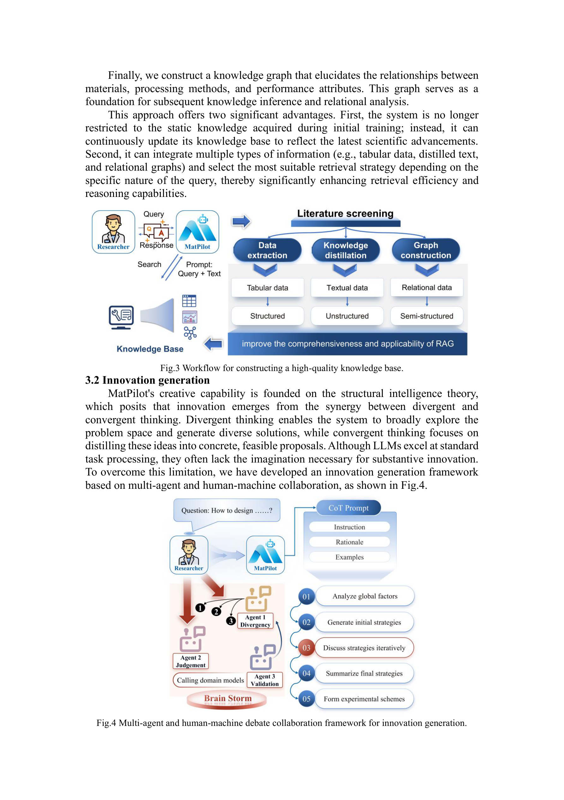
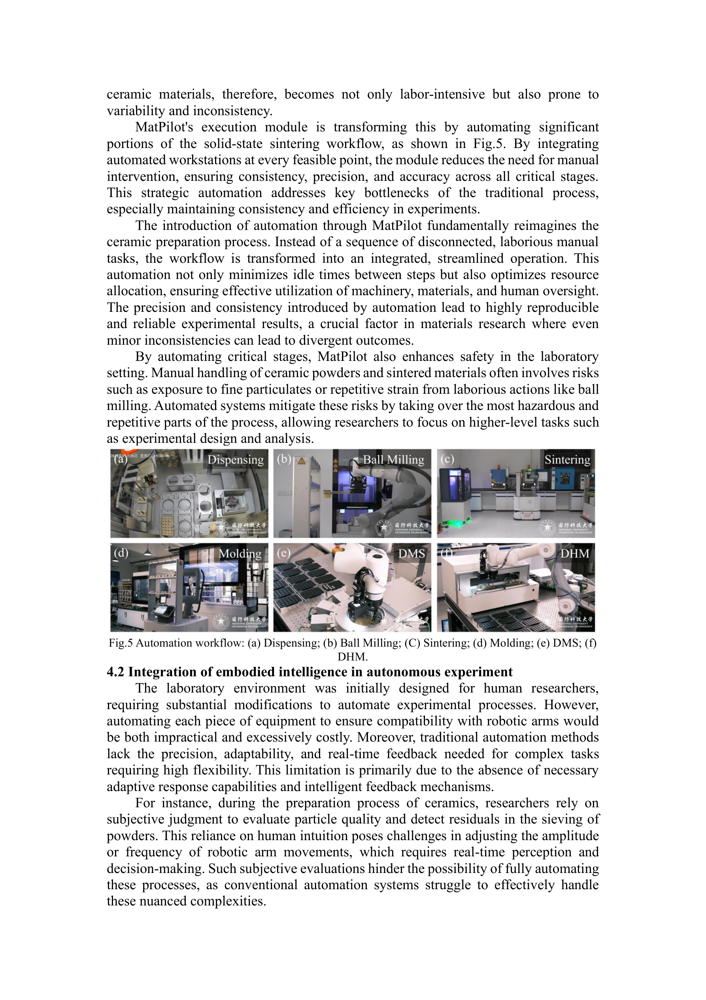

Figure 1
MatPilot은 LLM 기반 멀티 에이전트 시스템을 활용하여 인간-기계 협업 프레임워크 하에서 재료 과학 연구를 수행하는 AI 재료 과학자 시스템이다. 인지 모듈(cognition module)과 실행 모듈(execution module)로 구성되며, 자연어 상호작용을 통해 과학적 가설 생성, 실험 설계, 자동화 실험 수행, 반복적 최적화를 통합한 플랫폼이다.

Figure 2
기존 데이터 기반 재료 과학 AI는 선형적 로직에 의존하는 반폐쇄적(semi-closed) 시스템으로, 해석 가능성, 데이터 학습 효율성, 복잡한 구조-물성 관계 규명에 한계가 있다. 특히 상관관계(correlation)에만 집중하고 인과관계(causality)를 간과하는 문제가 있다. LLM의 등장으로 자연어 기반 인간-기계 협업이 가능해졌으며, 인간의 직관과 경험을 AI의 데이터 처리 능력과 결합하여 이러한 한계를 극복하고자 한다.

Figure 3

Figure 5
본 논문은 LLM 기반 멀티 에이전트 시스템을 재료 과학 전주기 연구에 적용하는 비전과 아키텍처를 제시한 포지션 페이퍼(position paper) 성격이 강하다. 인지-실행 이분 구조, 멀티 에이전트 혁신 생성, 자동화 실험 플랫폼의 통합이라는 큰 그림은 매력적이나, 실제 신소재 발견 성과나 정량적 평가가 부재하여 시스템의 실효성을 판단하기 어렵다. 체화 지능 적용 비전은 흥미롭지만 아직 개발 초기 단계이다. 인간-기계 협업을 통한 재료 연구의 미래 방향을 제시하는 데 의의가 있으며, 향후 구체적 발견 사례와 벤치마크 결과가 보완된다면 더 큰 영향력을 가질 수 있을 것이다.